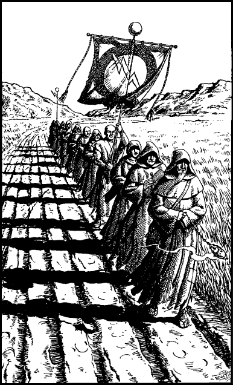

190
It is the mid-afternoon when the troop resumes the long journey east to Vanamor. During the ride, Lord Nathor voices his grave concern that Eldenoran bandits should be operating in the heart of his country: they have rarely dared to venture this far from home before. Although he does not say so, you sense that he knows the reason why they have become so bold of late. They have been sent here to find and kill you.
The road climbs out of the valley and zigzags its way through the forested hills to a high pass. Beyond this pass there stretches a wide expanse of lush grassland where herds of wild deer roam and graze freely. It is late in the afternoon when you catch sight of a procession approaching on the road ahead. Mostly they are men dressed in ragged brown robes, and one is carrying aloft a grimy banner which bears the image of a lightning bolt set upon a full moon.
‘Shoni pilgrims,’ says Nathor, dismissively. ‘They’re wandering beggar-monks who have taken a vow of poverty. Many in Garthen regard them as just a gang of scroungers who pretend to be a holy order so they can fleece the foolish. I suggest we ignore them and press on.’

If you wish to take Nathor’s advice and ignore the Shoni pilgrims, turn to 319.
If you decide to stop and talk to them, turn to 28.